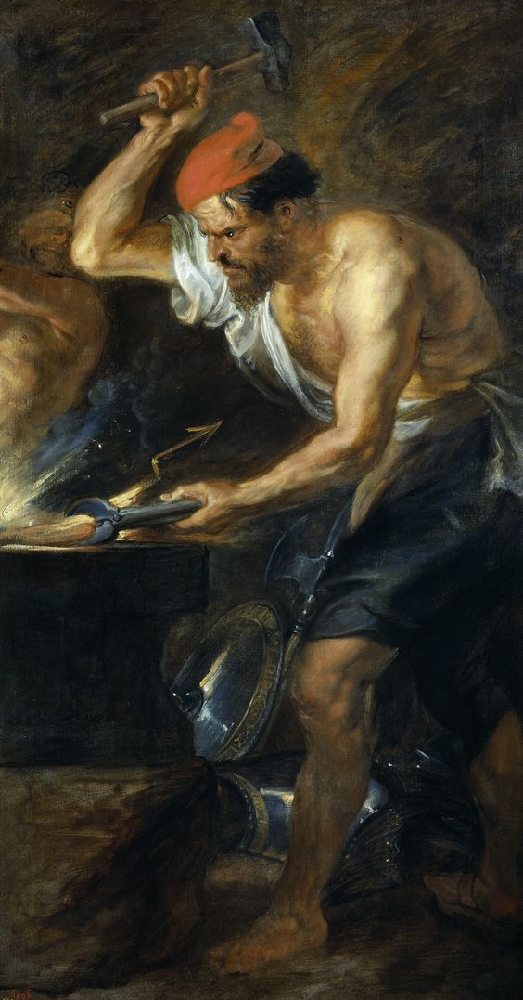

Hefesto
Introducción
Hefesto o Vulcano en la mitología romana, era el dios lisiado de la artesanía, la herrería y el fuego, los volcanes, la forja, la artesanía, la escultura, los metales y la metalurgia, y también patrón de los oficios relacionados con hornos. Era hijo de Zeus y Hera. Hefestos era uno de los 12 dioses del Olimpo que convivían con Zeus. Era un trabajador muy diestro y sus hermosas creaciones para los otros dioses y para los más privilegiados mortales eran famosas. También se le asocia la creación de la primera mujer humana, Pandora.

Nacimiento
Hefesto nació de Zeus y Hera, pero nació prematuramente después de un parto muy difícil. El niño era tan deforme que cuando Hera lo
vio, lo echó del Olimpo avergonzada por la fealdad de su hijo. Hefestos entonces llegó al océano y allí le salvaron la nereida Tetis y la oceánide Eurínome, y lo llevaron a la
costa de Lemnos, donde fijó su forja. A su cuidado, el joven se empezó a interesar por la artesanía y a hacer todo tipo de reliquias. Hefestos se vengó de Hera tiempo después,
cuando le encomendaron fabricar los tronos de oro para los olímpicos.

El de Hera poseía cadenas invisibles, y cuando ésta se sentó en él, quedó atrapada, incapaz de levantarse.
Los demás dioses le rogaron que volviese al Olimpo y la liberase, pero él se negó, al estar indignado por haber sido expulsado. Dionisio entonces, lo emborrachó y lo llevó de
vuelta al Olimpo a lomos de una mula. Hefestos, liberaría a su madre, pero sólo si Afrodita aceptaba contraer matrimonio con él. Entonces así fue, Zeus convenció a Hera de que
lo dejara, ya que temía que la belleza de la diosa causara peleas entre los otros dioses por su mano, y Hefestos se reconcilió con su madre.
Algunos mitos
La Caja de Pandora
Cuenta la leyenda que, tras haber robado el titán Prometeo el fuego de los dioses para regalarlo a los hombres y el castigo que Zeus
le impuso por tamaña osadía, su hermano Epimeteo recibió como regalo de los Olímpicos una compañera: Pandora. Ésta fue dotada con todos los encantos que los dioses podían
proporcionarle: Afrodita le dio la belleza, Hermes la elocuencia, Atenea la sabiduría, Apolo la música...
Cuando Pandora se presentó ante Epimeteo, lo hizo acompañada
de otro regalo de Zeus: una caja cerrada,que bajo ningún concepto debía ser abierta. Epimeteo, deslumbrado ante la gracia y la belleza de Pandora, ignoró la promesa hecha a su
hermano Prometeo de no aceptar jamás regalo alguno de los dioses olímpicos, pues eran astutos y traicioneros, y la aceptó como compañera, aceptando al mismo tiempo la caja que
la acompañaba, que escondió en lugar seguro...
Pero la curiosidad pudo con Pandora, y un día que Epimeteo dormía le robó la llave del lugar donde escondía la caja, y la
abrió para espiar su contenido. Al levantar la tapa, grande fue su desilusión al encontrarla vacía, pero era porque en ese mismo momento escaparon de ella todas las desgracias
y males que podían afectar al hombre, y se extendieron por el mundo: enfermedades, sufrimiento, guerras, hambre, envidia, ira... Mas todavía le dio tiempo a vislumbrar en el
fondo de la caja algo que aún no había escapado, y corriendo la cerró. Lo que pudo conservar en el fondo de la caja fue la Esperanza, que no consiguió escapar. De ese modo fue
sellado el destino de todos los hombres, que a partir de entonces padecieron toda suerte de males..., pero incluso en medio de los más terribles de ellos, siguen conservando la
Esperanza...